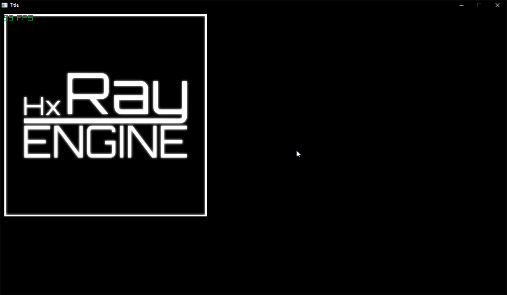

How Scenes work
This guide will go over how scenes work and how to add objects.
In hxRay, every scene is it's own class. A Scene can hold any object that extends an
RgAsset
A Scene's job is to automatically call the
init,
update, and
draw
functions of every asset in them. When switching scenes, it will also call the
unload
functions.
This means every scene manages their own objects, and it makes it easier to switch between environments.
Let's look it what makes a scene work, and how to use them.
Making your own scene
For readability, we will add Scene to the end of our scene class names.
Let's make a scene called TestScene.
Start by creating a file called TestScene.hx in your src folder.
Every scene needs to extend the RgScene class like this;
import hxray.RgScene;
class TestScene extends RgScene
{
}
Adding objects to your scene
Let's say we wanna add the hxRay logo as a sprite.
First we need to add the necessary functions: init and update.
Both of these are overrides, so add them inside your class like this:
{
}
override function update()
{
super.update();
}
Next, we need to create an object for our sprite. As we don't need to manipulate it during update, we can create it in the init function. Add the following code to Init:
register(testSprite);
What this code does
This code will put a hxRay logo in the top left of the screen.
The first line creates an instance of RgSprite, hxRay's sprite object.
The first 2 arguments of the constructor are the X and Y positions. The last is responsible for loading the sprite.
Assets.tex_hxRay is the default hxRay logo sprite supplied with new projects.
Every time you add or remove an asset, the Assets class will adjust accordingly.
The second line adds the sprite to the scene, at which point the scene will start automatically calling the sprite's update and draw functions.
Upon closing the game, or switching the scene, the sprite will automatically be unloded.
If you want to remove an asset from the scene, you can call the unregister function.
How to switch to this scene
If you try to compile, you will notice that you are still met with the default scene, of the hxRay logo in the middle of the screen, and not the top left.
This is because you haven't switched to the scene yet.
To do this, simply put this into the BaseScene.
After doing that and building your game, you should be met with a screen similar to this:

If everything went well, you are now ready for the next guide.